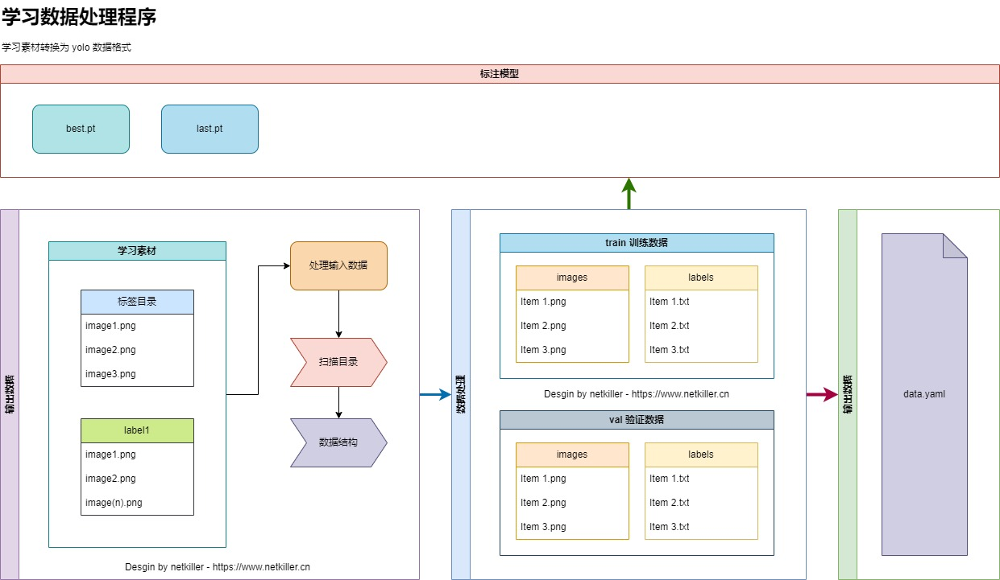

| 知乎专栏 |
做人工智能机器学习，给学习图片做标签是个体力活。动不动就需要标准上千张图片。
有没有更好的方法呢？
于是便想出了，用AI给学习素材打标签。
|  |
首先准备好学习数据，首批数据需要人工标注，可以使用 labelme 和 labelme2yoyo 工具标注，做第一轮学习，后面我们将用这个模型实现 AI 自动标注。
然后使用第一轮训练的bast.pt 模型，对这第二批数据进行处理，生成 yolo 所需的 dataset 数据，包括了 train 训练集, val 验证集。
最后输出 data.yaml 文件
代码讲训练数据转换为 YOLO 数据库集
# -*- coding: utf-8 -*-
import uuid
try:
import shutil
import os,sys,random,argparse
import yaml
import json
from PIL import Image
from ultralytics import YOLO
except ImportError as err:
print("Import Error: %s" % (err))
exit()
class Dataset:
train = {}
val = {}
test = {}
classes = []
data = {}
def __str__(self):
return (f"classes={self.classes} data={len(self.data)} train={len(self.train)} val={len(self.val)} test={len(self.test)}")
class Tongue():
# background = (22, 255, 39) # 绿幕RGB模式（R22 - G255 - B39），CMYK模式（C62 - M0 - Y100 - K0）
background = (0, 0,0)
def __init__(self):
self.basedir = os.path.dirname(os.path.dirname(os.path.abspath(__file__)))
sys.path.append(self.basedir)
# print(basedir)
# exit()
self.dataset = Dataset()
self.parser = argparse.ArgumentParser(description='自动切割产学习数据')
self.parser.add_argument('--source', type=str, default=None, help='图片来源地址')
self.parser.add_argument('--target', default=None, type=str, help='图片目标地址')
self.parser.add_argument('--val-number', type=int, default=10, help='检验数量',metavar=10)
# self.parser.add_argument('--classes', type=str, default=None, help='classes')
self.parser.add_argument('--clean', action="store_true", default=False, help='清理之前的数据')
self.parser.add_argument('--crop', action="store_true", default=False, help='裁剪')
self.parser.add_argument('--uuid', action="store_true", default=False, help='裁剪')
self.args = self.parser.parse_args()
def mkdirs(self,path):
if not os.path.exists(path):
os.makedirs(path)
def scanfile(self,path):
files = []
for name in os.listdir(path):
if os.path.isfile(os.path.join(path, name)):
files.append(name)
return (files)
def scandir(self,path):
files = []
for name in os.listdir(path):
if os.path.isdir(os.path.join(path, name)):
files.append(name)
return (files)
def walkdir(self,path):
for dirpath, dirnames, filenames in os.walk(path):
print(f"dirpath={dirpath}, dirnames={dirnames}, filenames={filenames}")
# print(filenames)
def datafile(self):
# 编写yaml文件
classes_txt = {i: self.dataset.classes[i] for i in range(len(self.dataset.classes))} # 标签类别
data = {
'path': os.path.join(os.getcwd(), self.args.target),
'train': "train/images",
'val': "val/images",
'test': "test/images",
'names': classes_txt
# 'nc': len(self.classes)
}
with open(os.path.join(self.args.target , 'data.yaml'), 'w', encoding="utf-8") as file:
yaml.dump(data, file, allow_unicode=True)
# print("标签：", self.classes)
def images(self):
try:
for label, files in self.dataset.data.items():
self.dataset.train[label] = []
for name in files:
# print(name)
source = os.path.join(self.args.source, label, name)
# print(input)
if self.args.uuid:
uuid.uuid4()
extension = os.path.splitext(name)[1]
target = os.path.join(self.args.target, 'train/images', f"{uuid.uuid4()}{extension}")
else:
target = os.path.join(self.args.target, 'train/images', name)
# print(target)
self.dataset.train[label].append(target)
if self.args.crop:
boxes = self.annotation(source)
if boxes is not None:
xyxy = boxes.xyxy[0]
xywh = boxes.xywh[0]
original = Image.open(source)
# width, height = original.size
# x0, y0, x1, y1 = map(int, results[0].boxes[0].xyxy[0])
tongue = original.crop(tuple(map(int, xyxy)))
# crop.save(output)
width, height = tongue.size
width += 50
height += 50
image = Image.new('RGB', (width, height), self.background)
image.paste(tongue, (
int(width / 2) - int(tongue.size[0] / 2), int(height / 2) - int(tongue.size[1] / 2)))
image.save(target)
else:
# print(f"COPY source={source}, target={target}")
shutil.copyfile(source, target)
# print(self.dataset.train)
except Exception as e:
# log.error(e)
print("images train: ", e)
exit()
try:
for label, files in self.dataset.data.items():
if len(files) < self.args.val_number:
self.args.val_number = len(files)
vals = random.sample(files, self.args.val_number)
self.dataset.val[label] = vals
for name in vals:
shutil.copyfile(os.path.join(self.args.source, label,name), os.path.join(self.args.target, 'val/images',name))
except Exception as e:
# log.error(e)
print("images val: ", e)
exit()
# exit()
def labels(self):
try:
for label, files in self.dataset.train.items():
for name in files:
# input =os.path.join(self.args.target, 'train/images', name)
# print(input)
boxes = self.annotation(name)
# print(boxes)
if boxes is not None:
filename, extension = os.path.splitext(os.path.basename(name))
print(filename)
xywhn = boxes.xywhn[0]
index = self.dataset.classes.index(label)
content = f"{index} {xywhn[0]} {xywhn[1]} {xywhn[2]} {xywhn[3]}"
# print(content)
with open(os.path.join(self.args.target, 'train/labels', filename + '.txt'), "w") as f:
f.write(content)
except Exception as e:
# log.error(e)
print("train labels", e)
exit()
try:
for label, files in self.dataset.val.items():
for name in files:
filename, extension = os.path.splitext(name)
# print(filename)
input = os.path.join(self.args.target, 'val/images', name)
boxes = self.annotation(input)
if boxes is not None:
xywhn = boxes.xywhn[0]
index = self.dataset.classes.index(label)
content = f"{index} {xywhn[0]} {xywhn[1]} {xywhn[2]} {xywhn[3]}"
# print(content)
with open(os.path.join(self.args.target, 'val/labels', filename + '.txt'), "w") as f:
f.write(content)
except Exception as e:
# log.error(e)
print("val labels",e)
exit()
def annotation(self,path):
if not os.path.exists(path):
return None
model = self.models['tongue']
try:
results = model(path)
if len(results):
# print(results[0])
if len(results[0].boxes):
# print(results[0].boxes)
# if len(results[0].boxes[0].xyxy):
# print(results[0].boxes[0].xyxy[0])
# # log.info(f"Image filename={filename}")
# print(results[0].boxes[0].xywhn[0])
# return results[0].boxes[0].xywhn[0]
return results[0].boxes[0]
except Exception as e:
# log.error(e)
print("annotation: ",e)
exit()
return None
def input(self):
directory = [
# 'labels/train','images/train','labels/val', 'images/val','labels/test', 'images/test'
'train/labels', 'train/images', 'val/labels', 'val/images', 'test/labels', 'test/images'
]
for dir in directory:
self.mkdirs(os.path.join(self.args.target,dir))
self.dataset.classes= self.scandir(self.args.source)
# print(self.dataset.classes)
for cls in self.dataset.classes:
self.dataset.data[cls] = self.scanfile(os.path.join(self.args.source, cls))
# print(self.dataset)
# exit()
pass
def process(self):
self.images()
self.labels()
pass
def output(self):
self.datafile()
pass
def main(self):
# print(self.args)
if self.args.clean:
shutil.rmtree(self.args.target)
if self.args.source and self.args.target:
self.models = {
'tongue': YOLO(f"{self.basedir}/model/tongue/best.pt"),
'shebei': YOLO(f"{self.basedir}/model/shebei/best.pt")
}
self.input()
self.process()
self.output()
else:
self.parser.print_help()
exit()
# if args.classes:
# self.classes = args.classes
# else:
# self.parser.print_help()
# # classes = args.classes
# exit(128)
if __name__ == "__main__":
try:
tongue = Tongue()
tongue.main()
except KeyboardInterrupt as e:
print(e)
命令行帮助信息
D:\workspace\netkiller\.venv\Scripts\python.exe D:\workspace\netkiller\bin\converter.py
usage: converter.py [-h] [--source SOURCE] [--target TARGET] [--val-number 10]
[--clean] [--crop] [--uuid]
自动切割产学习数据
options:
-h, --help show this help message and exit
--source SOURCE 图片来源地址
--target TARGET 图片目标地址
--val-number 10 检验数量
--clean 清理之前的数据
--crop 裁剪
--uuid 唯一文件名
(.venv) PS D:\workspace\netkiller> python.exe .\bin\converter.py --source .\datasets\test --target .\datasets\netkiller --clean --val-number 100 --uuid